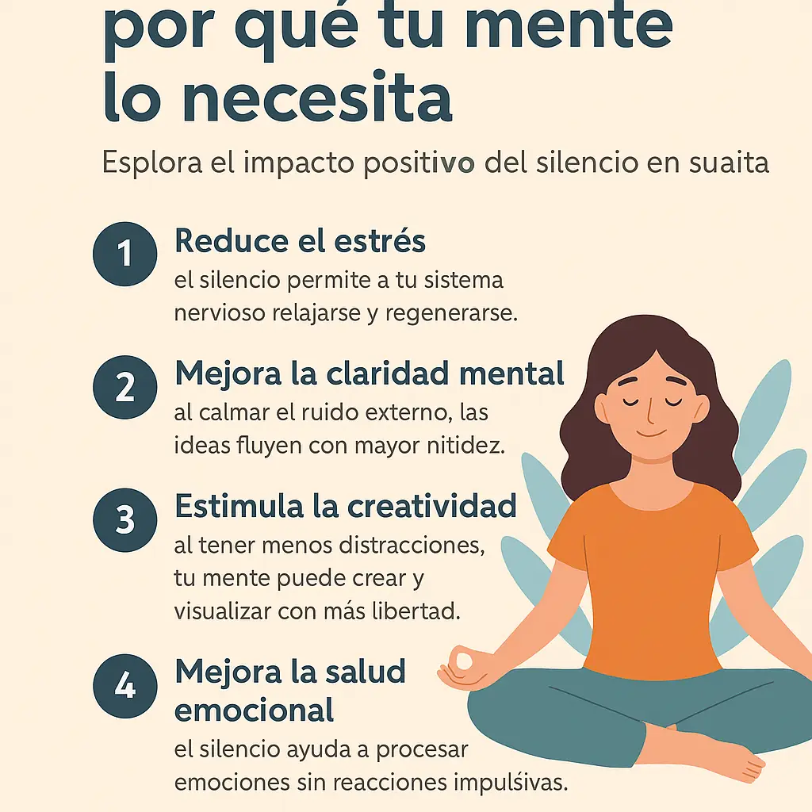

El poder del silencio: por qué tu mente lo necesita
¿Por qué el silencio es tan importante para la mente?
Vivimos en un mundo lleno de ruido: notificaciones, conversaciones, pantallas encendidas. Pero en medio de todo ese bullicio, el silencio puede ser el bálsamo que tu mente necesita. El silencio no es solo ausencia de sonido, es espacio para escuchar lo que realmente importa: tu interior.
5 beneficios del silencio mental
- Reduce el estrés: el silencio permite a tu sistema nervioso relajarse y regenerarse.
- Mejora la claridad mental: al calmar el ruido externo, las ideas fluyen con mayor nitidez.
- Estimula la creatividad: al tener menos distracciones, tu mente puede crear y visualizar con más libertad.
- Mejora la salud emocional: el silencio ayuda a procesar emociones sin reacciones impulsivas.
- Fortalece la conexión contigo mismo: aprendes a estar contigo, sin necesidad de estímulos externos.
¿Cómo incorporar más silencio a tu día?
No necesitas irte al bosque ni hacer un retiro espiritual. Aquí tienes formas simples de invitar el silencio a tu rutina:
- Apaga las notificaciones durante 1 hora al día.
- Haz una caminata sin música ni móvil.
- Despiértate 10 minutos antes y solo respira en silencio.
- Evita conversaciones innecesarias y aprende a disfrutar del silencio en compañía.
Práctica sugerida: 5 minutos de silencio consciente
Siéntate, apaga cualquier estímulo y pon un temporizador. Observa tu respiración, deja que los pensamientos pasen sin juzgar. Solo eso. El silencio es más poderoso de lo que crees.
Complementa tu práctica de silencio
- Cómo calmar la mente en 60 segundos
- Meditación guiada para principiantes
- 5 micro-hábitos para sentirte mejor cada día
- Cómo dejar de sobrepensar antes de dormir
¿Te animas a probar? Haz un espacio en tu día para el silencio. Empieza con unos minutos y observa cómo se transforma tu mente.